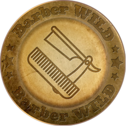

От барбера для барбера
В создании продукции принимают участие профессиональные барберы.
Идея создания мужской косметики Barber WILD пришла в 2015 году. Во время работы два приятеля барбера решили, что существующие средства для волос и бороды недостаточно хороши, и в 2016 году создали собственную линию, которая позволила им проявить свое мастерство в полной мере. Но не только профессиональный барбер — каждый мужчина, который заботится о своем здоровье и облике, может теперь по достоинству оценить качество нашей продукции, а также легко и быстро самостоятельно придать прическе, усам и бороде приятный вид.
Все, что мы делаем — делаем с душой, начиная от бритья и стрижки, и заканчивая укладкой и уходом за бородой и волосами. Сегодня мы производим сертифицированные средства из натуральных высококлассных компонентов, поставляем их в лучшие барбершопы. Мы отлично разбираемся в своей работе, внимательно следим за качеством продукции и развиваем Barber WILD, создавая новые средства и улучшая существующие.
В создании продукции принимают участие профессиональные барберы.
Косметика оздоравливает кожу и волосы, насыщая их питательными ингредиентами.
Оптимально эргономичная емкость, практичная для использования и хранения.
Выгодные условия для наших постоянных партнеров и покупателей.
Узнаваемый мужской бренд, получивший широкое распространение в барбершопах
Эффектный ореол свободы и мужественности, идеально подходящий каждому мужчине.